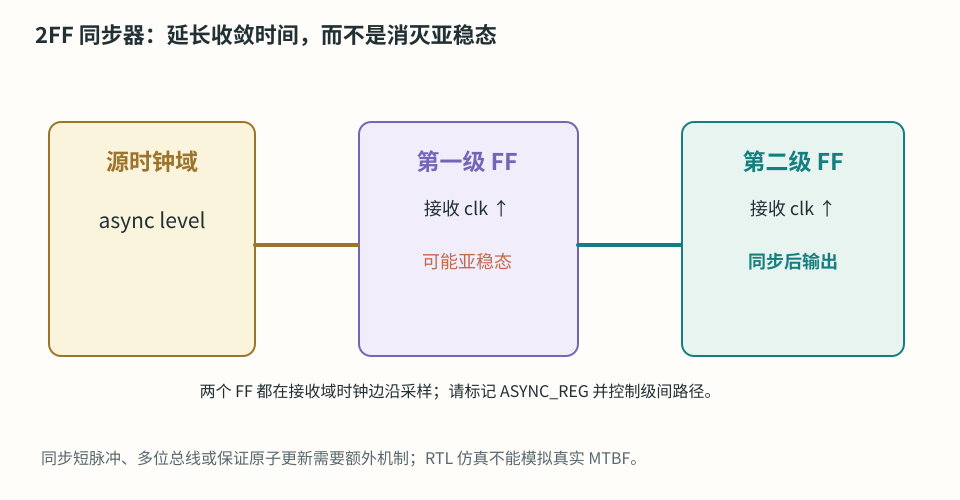
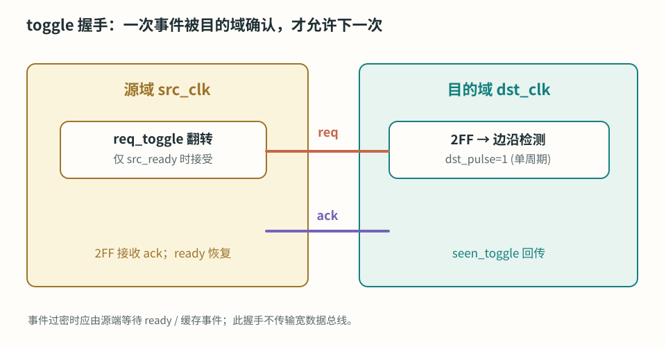
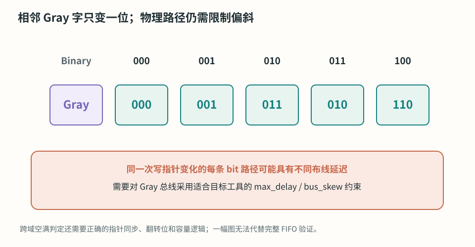

CDC：一个比特跨域也需要协议
区分单 bit 电平同步、事件握手、Gray FIFO 指针与物理偏斜；让跨时钟域行为可验证但不过度承诺。
01 / 为什么在两个时钟域之间传递一个 bit 也不容易？
两个没有固定相位关系的时钟，会在不可预测的相对时刻采样。若源信号恰好在目的触发器的建立/保持窗口内变化，首级触发器有可能进入亚稳态；它的收敛时间是概率性的。
同步器并不让“违反时序”永远消失，它通过给予首级寄存器更长的稳定时间，把亚稳态传播到下游的概率降低到工程可接受范围。具体 MTBF 取决于目标器件参数、目的频率、数据变化率、级间布线和 PVT 条件；不能凭“2FF + 200 MHz”就给出通用的数百年 MTBF。

AMD UG949 对 CDC 指出要使用可识别的同步器电路、正确设置 ASYNC_REG，并可用 report_cdc、report_synchronizer_mtbf 复核。对于异步复位，还需确认两时钟域的复位释放顺序是否兼容各自接口协议。
02 / 不丢事件的基本方法：toggle + acknowledgment
源端要发送一个“发生了事件”的通知，而目的时钟可能更慢。可把事件编码成每次翻转一次的 req_toggle，目的端同步后检测到值变化便产生一个周期的 dst_pulse，同时把已观察的 toggle 状态回传作 ack。源端只有在 req_toggle == ack_sync 时才能接收下一次事件。

// 核心思想（完整可运行 RTL 见 examples/rtl/cdc_toggle_event.v）
wire src_ready = (req_toggle == ack_sync);
always @(posedge src_clk or negedge src_rst_n) begin
if (!src_rst_n)
req_toggle <= 1'b0;
else if (src_pulse && src_ready)
req_toggle <= ~req_toggle;
end
// 目的域将 req_sync 与已看到的 seen_toggle 比较，
// 产生 dst_pulse，并更新 seen_toggle 供 ack 返回。这类握手不丢已被接受的事件，但也不缓存源端 ready=0 时的脉冲。若持续事件流可能超过握手往返速度，应在源端加队列或者用异步 FIFO。复位时两侧的 toggle 状态必须被一致地初始化，并定义单独重启某一侧的安全处理。
协议测试以不同周期的两路时钟运行，发送多次源事件，检查目的端脉冲计数一一对应、从不重复。此测试是逻辑功能验证，不模拟物理亚稳态。
03 / 为什么 Gray 码同步仍然需要布线约束？
异步 FIFO 的写端和读端分别维护指针，并把已寄存的 Gray 编码指针送过两级目的域同步器。Gray 编码的邻接状态只变一个位，但这是假设接收端能按发送端的相邻顺序观察到它们。

| Binary | Gray | 与前一个 Gray 的差别 |
|---|---|---|
| 000 | 000 | 初始 |
| 001 | 001 | 最低位变化 |
| 010 | 011 | 中间位变化 |
| 011 | 010 | 最低位变化 |
| 100 | 110 | 最高位变化 |
若不同 Gray 位被布线到接收 FF 的延迟跨度大于相邻源指针变化间隔，目的端可能在一个采样点混合观察来自不同源事件的位。针对这种 CDC Gray 总线需要合适的 set_max_delay -datapath_only 或 set_bus_skew 约束；不能先对所有异步时钟加 blanket false path，又假定更具体的 max delay 仍然生效。必须通过工具报告确认例外优先级。AMD UG949 的单条 CDC 路径指导说明这一点。
Gray 码不是多位数据的通用原子性协议：它适合逐次递增的指针，不意味着能把任意八位 payload 直接 Gray 编码再拆成八个单独同步器。
04 / FIFO 深度还要由流量最坏情况决定
CDC 电路的逻辑正确不等于缓冲容量足够。如果一侧以 100 MHz 每拍写一个字节，另一侧以 80 MHz 每拍读一个字节，而且没有背压，净增长近似为每秒 20 MB。深度 256 的 FIFO 在持续这种差速时很快就会耗尽——加深队列只延迟溢出，而不是解决长期速率差。
设计容量时应列出突发最大长度、源/目的平均速率、最坏暂停时间、背压允许程度和丢数策略，并把 FIFO 的满/空与实际跨域指针同步延迟一起考虑。不能只依据“写指针永远不会追上读指针”或某次室温实验下“没有溢出”下结论。
05 / 同时检查功能、结构识别和物理约束
iverilog -g2012 -Wall -s tb_cdc_toggle_event -o /tmp/cdc.vvp examples/rtl/cdc_toggle_event.v examples/tb/tb_cdc_toggle_event.v
vvp /tmp/cdc.vvp
# Vivado 实现之后检查（需要工具与真实设计）：
# report_cdc
# report_synchronizer_mtbf除了 testbench 的次数统计，工程审查应明确 src/dst 时钟相位关系、reset 源、同步器前是否有组合逻辑、第一/第二级 FF 之间的逻辑和布线、Gray 总线延迟约束及端点识别结果。
用两级 FF 同步 8 位 Gray 编码的任意数据总线，是否保证收到某个完整发送字？
不保证。Gray 仅对相邻编码关系提供性质，不能修复任意字变化时多位同时翻转及接收端异步采样的一致性。宽数据应使用稳定保持 + 握手、双口异步 FIFO 或合适的 CDC IP。